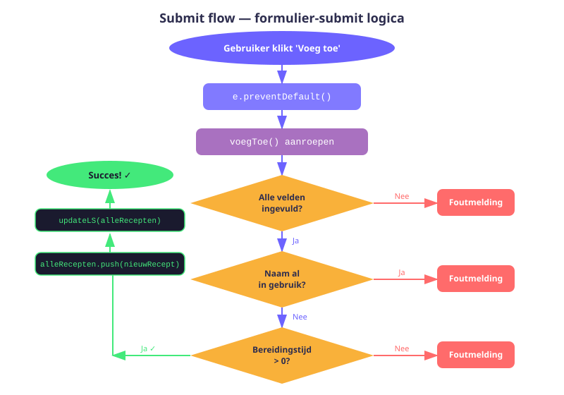
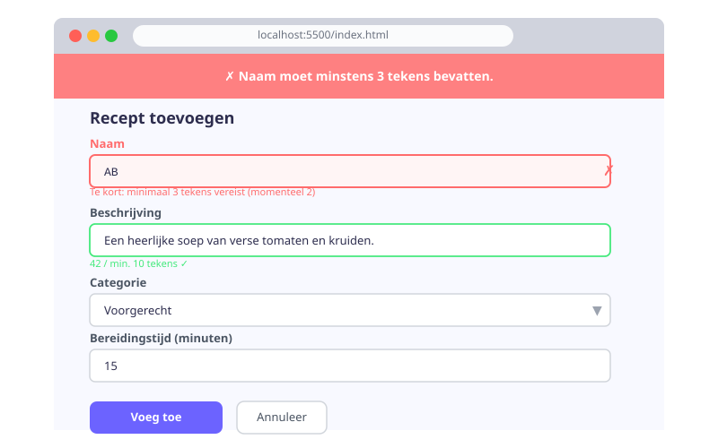

Receptenapp — Formulier & Invoer
- Een HTML-formulier koppelen aan JavaScript via
addEventListener('submit', ...) e.preventDefault()correct gebruiken om de standaard submit-actie te stoppen- Formulierwaarden ophalen en valideren in meerdere stappen
- Een nieuw object aanmaken op basis van formulierinvoer
- Feedback geven aan de gebruiker via succes- en foutmeldingen
- Een "willekeurig basisrecept"-functie implementeren met
Math.random()
11.1 Situatie: waar staan we?
In H09 hebben we de bestandsstructuur opgezet en de data aangemaakt. In H10 hebben we script.js gebouwd om recepten op de overzichtspagina te tonen. Nu bouwen we add.js — de logica voor de add.html-pagina. Hiermee kan de gebruiker:
- Zelf een nieuw recept invoeren via het formulier
- Willekeurig een basisrecept toevoegen
- Alle recepten wissen
11.2 add.js starten
// add.js
import { basisRecepten } from "./recepten.js";
import { updateLS } from "./hulpfuncties.js";
// Laad de huidige recepten uit localStorage
let alleRecepten = JSON.parse(localStorage.getItem('opgeslagenRecepten')) || [];Vergeet niet de koppeling in add.html:
<!-- add.html — onderaan in de body -->
<script src="add.js" type="module"></script>11.3 Feedback tonen: toonMelding()
Elke actie geeft de gebruiker terugkoppeling. Een eenvoudige functie toont een bericht in het feedback-element:
function toonMelding(soort, tekst) {
const melding = document.querySelector('#melding');
melding.innerHTML = `<p>${tekst}</p>`;
melding.className = `melding ${soort}`;
melding.style.display = 'block';
}
// Oproepen:
toonMelding('succes', 'Recept toegevoegd!');
toonMelding('fout', 'Niet alle velden zijn ingevuld.');soort is "succes" (groen) of "fout" (rood). De CSS-klassen .succes en .fout in stijl.css definiëren de kleur.
11.4 Submit listener op het formulier
document.querySelector('#recept-formulier').addEventListener('submit', (e) => {
e.preventDefault(); // Voorkom het herladen van de pagina
voegToe();
});e.preventDefault() is essentieel: zonder dit verzendt het formulier de data naar een server en herlaadt de pagina, waardoor al onze JavaScript-state verloren gaat.

11.5 De voegToe() functie
De validatie werkt in stappen: bij elke fout stoppen we de functie met return. Zo komen we nooit bij het opslaan zonder geldige data.
function voegToe() {
// Stap 1: Haal de veldwaarden op
const nieuwRecept = {
naam: document.querySelector('#naam').value.trim(),
beschrijving: document.querySelector('#beschrijving').value.trim(),
categorie: document.querySelector('#categorie').value,
bereidingstijd: Number(document.querySelector('#bereidingstijd').value),
};
// Stap 2: Valideer — zijn alle velden ingevuld?
if (!nieuwRecept.naam || !nieuwRecept.beschrijving || !nieuwRecept.categorie || !nieuwRecept.bereidingstijd) {
toonMelding('fout', 'Vul alle velden in voordat je een recept toevoegt.');
return;
}
// Stap 3: Valideer — is de naam al in gebruik?
const bestaandeNamen = alleRecepten.map(r => r.naam.toLowerCase());
if (bestaandeNamen.includes(nieuwRecept.naam.toLowerCase())) {
toonMelding('fout', `Er bestaat al een recept met de naam "${nieuwRecept.naam}".`);
return;
}
// Stap 4: Valideer — is bereidingstijd een positief getal?
if (nieuwRecept.bereidingstijd <= 0 || isNaN(nieuwRecept.bereidingstijd)) {
toonMelding('fout', 'Bereidingstijd moet een positief getal zijn.');
return;
}
// Stap 5: Voeg toe en sla op
alleRecepten.push(nieuwRecept);
updateLS(alleRecepten);
toonMelding('succes', `Recept "${nieuwRecept.naam}" is toegevoegd!`);
// Stap 6: Reset het formulier
document.querySelector('#recept-formulier').reset();
}| Concept | Code | Gebruik |
|---|---|---|
| Waarde ophalen | .value.trim() | Whitespace verwijderen |
| Omzetten naar getal | Number(...) | String naar number |
| Stoppen bij fout | return; | Verdere uitvoering voorkomen |
| Duplicaat controleren | .map() + .includes() | Uniekheid garanderen |
| Opslaan | push() + updateLS() | Array en localStorage |
| Formulier leegmaken | .reset() | Na succesvolle opslag |
11.6 Willekeurig basisrecept toevoegen
Met de onderstaande functie voeg je willekeurig één basisrecept toe dat nog niet in de lijst staat:
function voegWillekeurigToe() {
// 1. Maak een lijst van bestaande namen
const bestaandeNamen = alleRecepten.map(r => r.naam.toLowerCase());
// 2. Filter de basisrecepten: welke zijn er nog niet?
const beschikbaar = basisRecepten.filter(r =>
!bestaandeNamen.includes(r.naam.toLowerCase())
);
// 3. Zijn er nog beschikbare basisrecepten?
if (beschikbaar.length === 0) {
toonMelding('fout', 'Alle basisrecepten zijn al toegevoegd!');
return;
}
// 4. Kies een willekeurig basisrecept
const index = Math.floor(Math.random() * beschikbaar.length);
const willekeurig = beschikbaar[index];
// 5. Voeg toe en sla op
alleRecepten.push(willekeurig);
updateLS(alleRecepten);
toonMelding('succes', `Basisrecept "${willekeurig.naam}" toegevoegd!`);
}
document.querySelector('#btn-willekeurig').addEventListener('click', voegWillekeurigToe);Math.floor(Math.random() * beschikbaar.length) geeft een willekeurig geheel getal van 0 tot (maar niet inclusief) de lengte van de array — een klassieker voor het kiezen van een willekeurig element.
11.7 Alle recepten verwijderen
function wisAlleRecepten() {
if (confirm('Ben je zeker dat je alle recepten wil verwijderen?')) {
alleRecepten.length = 0; // Array legen (zelfde referentie bewaren)
updateLS(alleRecepten);
toonMelding('succes', 'Alle recepten zijn verwijderd.');
}
}
document.querySelector('#btn-verwijder-alle').addEventListener('click', wisAlleRecepten);array.length = 0alleRecepten.length = 0 is een handige truc om een array leeg te maken zonder een nieuwe array aan te maken. Dit werkt omdat we de referentie naar de array bewaren. Het is anders dan alleRecepten = [], wat een nieuwe array aanmaakt en de oude referentie verbreekt.
Oefeningen
Breid de validatie in voegToe() uit met de volgende extra controles:
- Naam moet minstens 3 tekens lang zijn.
- Beschrijving moet minstens 10 tekens lang zijn.
- Bereidingstijd mag maximaal 480 minuten zijn.
Toon een duidelijke foutmelding als een van deze regels niet voldaan is.

Voeg een live tekenteller toe bij het beschrijving-veld die bijwerkt bij elke toetsaanslag (input-event). Toon: "X / 200 tekens ingegeven."
- Voeg een
<span id="teller">toe na het textarea-element inadd.html. - Voeg een
input-listener toe op het textarea-element inadd.js. - Werk de tekst van de span bij bij elke toetsaanslag.
Pas de toonMelding() functie aan zodat het bericht na 5 seconden automatisch verdwijnt met behulp van setTimeout:
function toonMelding(soort, tekst) {
const melding = document.querySelector('#melding');
melding.innerHTML = `<p>${tekst}</p>`;
melding.className = `melding ${soort}`;
melding.style.display = 'block';
// Verberg na 5 seconden
setTimeout(() => {
melding.style.display = 'none';
}, 5000);
}Huistaak
Opdracht: Volledig werkend formulier
Bouw de volledige add.js na en test alle functies grondig.
Deel 1 — Formulier en validatie (4 punten)
- Implementeer
voegToe()met alle 4 validatiestappen. - Voeg de extra validatie toe (minimumlengte naam en beschrijving).
Deel 2 — Extra knoppen (3 punten)
- Implementeer
voegWillekeurigToe(). - Implementeer
wisAlleRecepten()met bevestigingsvenster.
Deel 3 — UX verbeteringen (3 punten)
- Voeg een live tekenteller toe bij het beschrijving-veld.
- Laat meldingen automatisch verdwijnen na 5 seconden.
Vragenlijst
Controleer of je de leerstof van dit hoofdstuk begrijpt.
Waarom is e.preventDefault() noodzakelijk bij het verwerken van een formulier?
Waarom gebruiken we Number(document.querySelector('#bereidingstijd').value)?
Wat doet Math.floor(Math.random() * beschikbaar.length)?
Wat is het verschil tussen alleRecepten.length = 0 en alleRecepten = []?
Wat doet document.querySelector('#recept-formulier').reset()?
Hoe controleer je of een getal geen NaN is in JavaScript?